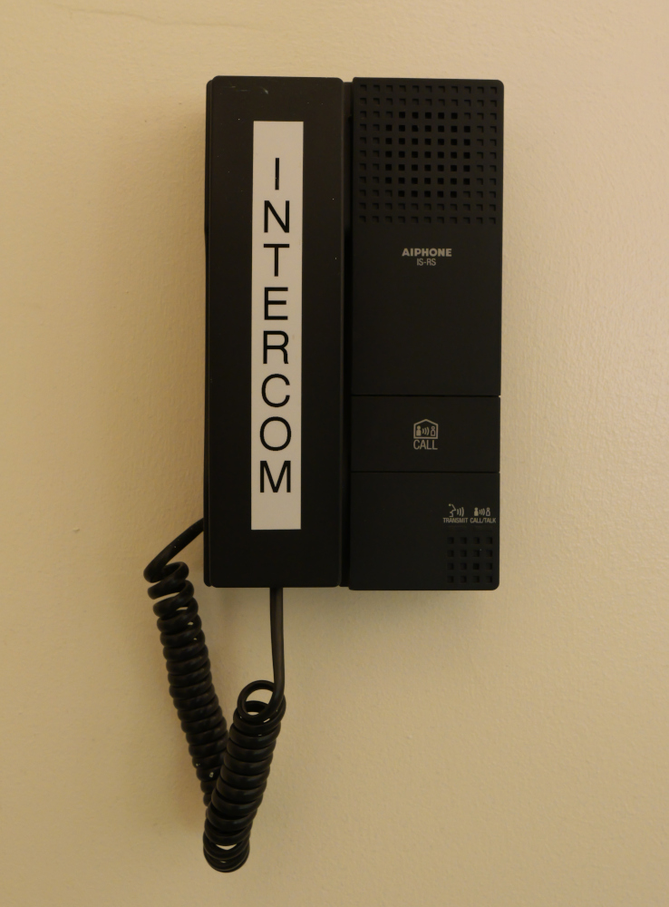
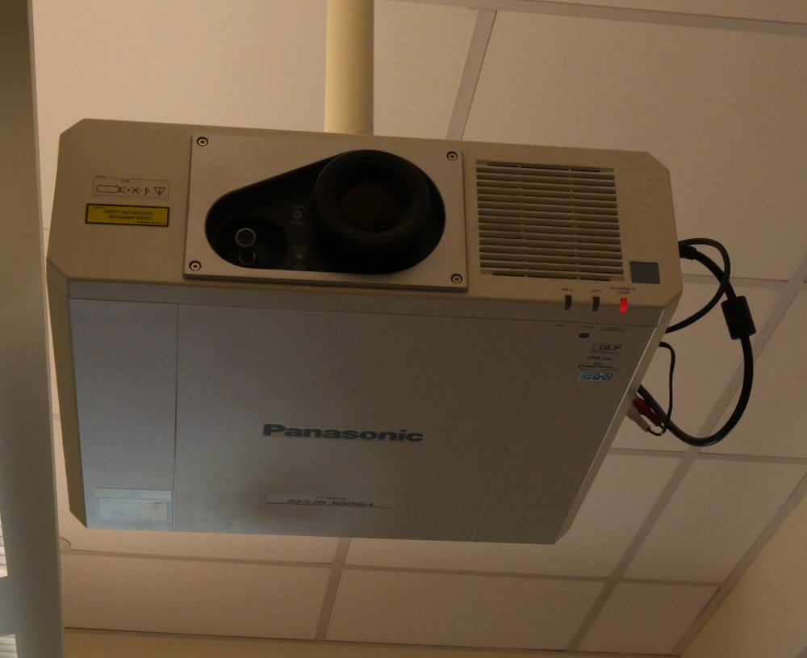

<head>
    <!-- for optimal display on high DPI devices -->
    <meta name="viewport" content="width=device-width, initial-scale=1.0" />
    <link rel="stylesheet" href="https://cdn.jsdelivr.net/npm/@photo-sphere-viewer/markers-plugin/index.min.css" />
    <link rel="stylesheet" href="https://cdn.jsdelivr.net/npm/@photo-sphere-viewer/core/index.min.css" />
	<link rel="stylesheet" href="https://cdn.jsdelivr.net/npm/@photo-sphere-viewer/virtual-tour-plugin@5/index.css" />
	<style>
a:link {
  color: white;
  background-color: transparent;
  text-decoration: none;
}

a:visited {
  color: lightgray;
  background-color: transparent;
  text-decoration: none;
}

a:hover {
  color: red;
  background-color: transparent;
  text-decoration: underline;
}

a:active {
  color: yellow;
  background-color: transparent;
  text-decoration: underline;
}
html, body, #viewer {
  width: 100%;
  height: 100%;
  margin: 0;
  font-family: sans-serif;
}
	.custom-tooltip {
    max-width: none;
    width: 300px;
    box-shadow: 0 0 0 3px white;
}

.custom-tooltip .psv-tooltip-content {
    padding: 0;
}

.custom-tooltip img {
    width: 100%;
    border-radius: 4px 4px 0 0;
}

.custom-tooltip h2,
.custom-tooltip p {
    margin: 1rem;
    text-align: justify;
}
</style>
</head>

<!-- the viewer container must have a defined size -->
<div id="viewer" style="width=device-width"></div>

<script type="importmap">
    {
        "imports": {
            "three": "https://cdn.jsdelivr.net/npm/three/build/three.module.js",
            "@photo-sphere-viewer/core": "https://cdn.jsdelivr.net/npm/@photo-sphere-viewer/core/index.module.js",
            "@photo-sphere-viewer/markers-plugin": "https://cdn.jsdelivr.net/npm/@photo-sphere-viewer/markers-plugin/index.module.js",
			"@photo-sphere-viewer/gyroscope-plugin": "https://cdn.jsdelivr.net/npm/@photo-sphere-viewer/gyroscope-plugin/index.module.js"
			"@photo-sphere-viewer/virtual-tour-plugin": "https://cdn.jsdelivr.net/npm/@photo-sphere-viewer/virtual-tour-plugin/index.module.js"
        }
    }
</script>

<script type="module">
    import { Viewer } from '@photo-sphere-viewer/core';
    import { MarkersPlugin } from '@photo-sphere-viewer/markers-plugin';
    import { GyroscopePlugin } from '@photo-sphere-viewer/gyroscope-plugin';
	import { VirtualTourPlugin } from '@photo-sphere-viewer/virtual-tour-plugin';
    const viewer = new Viewer({

        plugins: [
		GyroscopePlugin,
		[VirtualTourPlugin, {
            positionMode: 'manual',
            renderMode: '3d',
        }],
        [MarkersPlugin, {
		"defaultHoverScale": true,
                 }],   
           ],
	});	  
	
const virtualTour = viewer.getPlugin(VirtualTourPlugin);
				
const markerlectern = {
    id: 'marker-lectern',
    image: 'shield.png',
    tooltip: {
      "content": document.querySelector('#tooltip-content').innerText,
	  "className": 'custom-tooltip',
      "position": "top center",
      "trigger": "click"
    },
    size: { width: 32, height: 32 },
    anchor: 'bottom center',
    "position": {
      "yaw": 1.397,
      "pitch": -0.124
    },
};
	
	


		virtualTour.setNodes([
    {
        id: '1',
        panorama: 'Frey313-Front.jpg',
        name: 'Front',
        caption: `[1] Frey Single Projector Large Classroom:`,
        links: [{ nodeId: '2' }],
        markers: [markerlectern],
        position:{ textureX: 1500, textureY: 780 },
        panoData: { poseHeading: 327 },
    },
    {
        id: '2',
        panorama: 'Frey313-Rear.jpg',
        name: 'Rear',
        caption: `[2] Frey Single Projector Large Classroom:`,
        links: [{ nodeId: '1' }],
        position:{ textureX: 1500, textureY: 780 },
        panoData: { poseHeading: 318 },
    },
    
], '2');
	

        container: document.querySelector('#viewer'),
		sphereCorrection: { pan:0, tilt:0, roll: -0.025 },
		navbar: [
		'zoom', 
		'move', 
		'markers', 
		'caption',
		'description',
		'gyroscope'
		],
    });
	const markersPlugin = viewer.getPlugin(MarkersPlugin);
	viewer.addEventListener('ready', () => {
    viewer
        .animate({
            yaw: 1.45,
            pitch: 0.15,
            speed: 2500,
        })
        .then(() => {
            markersPlugin.showMarkerTooltip('marker-lectern');
        });
}, { once: true });

	</script>

<script type="text/template" id="description">
    <p>This Frey Large classroom is equiped with one projector and seats aproximately 52 people. <br> For more information on what equipment is in each room in Frey Hall, please refer to our Guide on Equipment Installed in Classrooms: <a href="https://it.stonybrook.edu/services/classtech#classroom-info">https://it.stonybrook.edu/services/classtech#classroom-info</a> <br> <br>
	For more information on how to operate Frey Far Beyond Style Lecterns, please see our Far Beyond Style Knowlage Base Article: <a href="https://it.stonybrook.edu/help/kb/far-beyond-style">https://it.stonybrook.edu/help/kb/far-beyond-style</a></p>
</script>

<script type="text/template" id="tooltip-content">
        <article>
		 
      <h2>Frey Far Beyond Style Lectern</h2>
      <p>The Lectern houses the control panel, and computer for the room. 
	  <br>
	  <br>
        For more information on how to operate Frey Far Beyond Style Lecterns, please see our Far Beyond Style Knowlage Base Article: <a href="https://it.stonybrook.edu/help/kb/far-beyond-style">https://it.stonybrook.edu/help/kb/far-beyond-style</a>
      </p>
    </article>
</script>	

<script type="text/template" id="tooltip-lights">
        <article>
		 
      <h2>Lighting Controll</h2>
      <p>
        The  Five button Lighting Controll allows you to control the lights. <br><br>
		The buttons are as follows:
		<ul>
  <li>Button one: Full On</li>
  <li>Button two: Dim screen</li>
  <li>Button three: Dim audience</li>
  <li>Button four: Light front</li>
  <li>Button five: Full Off</li>
</ul>
<br>
All of the above lighting controll is mirrored on the touch panel in the lectern.
<br>
<br>
The Two Button Lighting Controll (not pictured) allows for Full on and Full off Control of the classroom lights.
		</a>
      </p>
    </article>
</script>	

<script type="text/template" id="tooltip-supplies">
        <article>
		 
      <h2>Supply Box</h2>
      <p>The Supply Box holds additional consumable supplies such as Markers and Erasers.
	  <br>
	  <br>
	  On top of the Supply Box is white board cleaning spray, and tri-fold paper towels for a deeper clean.</p>
    </article>
</script>	

<script type="text/template" id="tooltip-intercom">
        <article>
		 
      <h2>Intercom</h2>
      <p>The Intercom will call the Classroom Support office in Frey Hall, who can assist you if needed.</p>
    </article>
</script>	

<script type="text/template" id="tooltip-echo">
        <article>
		 
      <h2>Lecture Capture Camera</h2>
      <p>The Lecture Capture Camera can be used to capture your lectures to the Lecture Capture System. The camera also allows for video to be sent to Zoom or other communication/colaboration applications on the lectern computer.
	  
	  <br> 
	  <br>
	  For more info on best practices, or how to schedule a lectrue capture, visit <a href="https://it.stonybrook.edu/services/echo360-lecture-capture">https://it.stonybrook.edu/services/echo360-lecture-capture</a></p>
    </article>
</script>	

<script type="text/template" id="tooltip-projector">
        <article>
		 
      <h2>Projector</h2>
      <p>
        This projector allows for presentation of the lectern computer, personal device, or wireless screen sharing.
		<br>
		<br>
		For more information on how to operate the projector, please see our Far Beyond Style Knowlage Base Article: <a href="https://it.stonybrook.edu/help/kb/far-beyond-style">https://it.stonybrook.edu/help/kb/far-beyond-style</a>
      </p>
	  </article>
</script>	


<script type="text/template" id="tooltip-markers">
        <article>
		 
      <h2>Whiteboards</h2>
      <p>
        The Whiteboard allows users to write text, draw diagrams, and map out complex topics.
		<br>
		<br>
		Please remember to clean the board after use. If the erasers are leaving streaks, Whiteboard cleaning solution and paper towels are available in the Supply Box on the wall next to the board. 
		<br>
		<br>
		Additional markers and erasers are also available in the Supply Box.
</a>
      </p>
	  </article>
</script>	

<script type="text/template" id="tooltip-seats">
        <article>
		 
      <h2>Accessable Seating</h2>
      <p>
        There are four wheelchair accessable seating postions, each with a rolling chair for added flexability.
		<br>
		<br>
		Each outer edge of the first two rows has this seating arrangment in for a total of four accessable seats.
		<br>
		<br>
		Please contact Classroom Support for additional details or a seating chart for this room.

      </p>
	  </article>
</script>	

<script type="text/template" id="tooltip-chair">
        <article>
		<h2>Professors Desk & Chair</h2>
      <p>
        The Professors Desk & Chair are permanant movable furniture assigned to this classroom.
		<br>
		<br>
		Please return the Desk & Chair to the side of the Lectern if they are moved out of place.

      </p>
	  </article>
</script>	

<script type="text/template" id="tooltip-exterior">
        <article>
		 
      <h2>Exterior Scheduling Panel</h2>
      <p>
        Outisde the classroom is the scheduling panel.
		<br>
		<br>
		The panels border will illumiate blue when the room is in use, and white when it is not currently scheduled.
		<br>
		<br>
		The panel will also note the current and upcomming classes on its screen.

      </p>
	  </article>
</script>	

<script type="text/template" id="tooltip-garbage">
        <article>
		 
      <h2>Garbage, Recycling & other Custodial issues</h2>
      <p>
        Located on both sides of the room, near the doors, are Garbage, Paper Recycling and Container Recycling.
		<br>
		<br>
		Additional Custodial issues can be reported to (631) 632-6400 (spills) or a <a href="https://www.stonybrook.edu/fixit/">FIXIT</a> (damage) can be made.
	      </p>
	  </article>
</script>

<script type="text/template" id="tooltip-window">
        <article>
		 
      <h2>Window Shades</h2>
      <p>
        Located on the right side of the each window is a pull chain to open or close the shades in the room.
		<br>
		<br>
		A <a href="https://help.stonybrook.edu/TDClient/277/Portal/Home/">Service Ticket</a> can be made for any damage that needs to be reported.
	      </p>
	  </article>
</script>

<script type="text/template" id="tooltip-hvac">
        <article>
      <h2>HVAC and Tempature Control</h2>
      <p>
        Noisy HVAC or tempature change requests can be made by calling COMS or by Creating a FIXIT Ticket.
		<br>
		<br>
		Issues can be reported to (631) 632-6400 or a <a href="https://www.stonybrook.edu/fixit/">FIXIT Ticket</a> can be made.
	      </p>
	  </article>
</script>